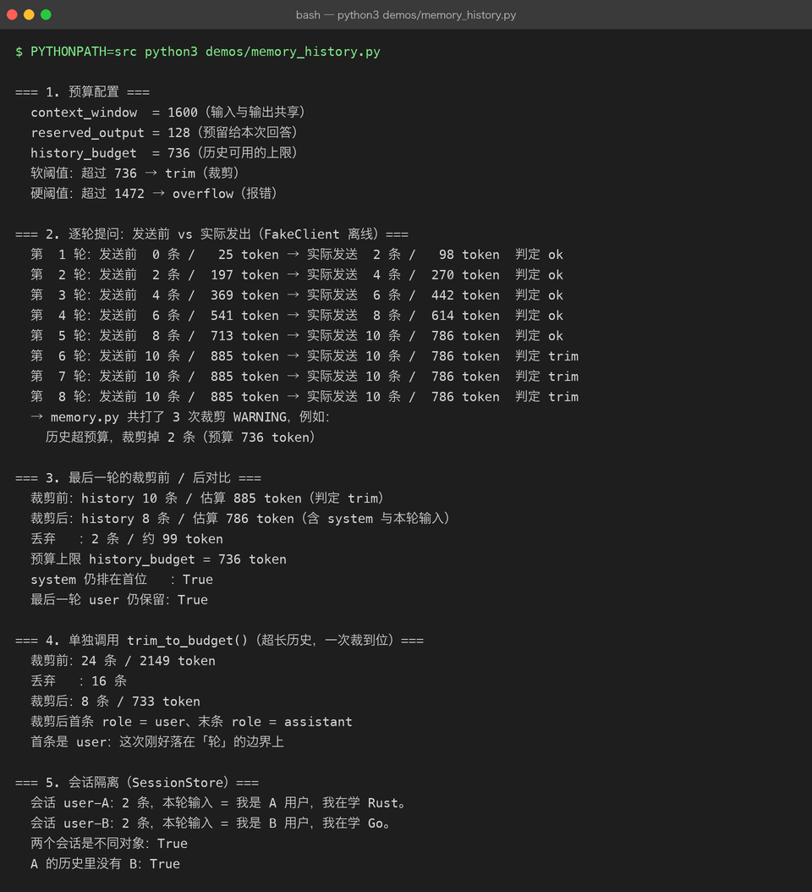
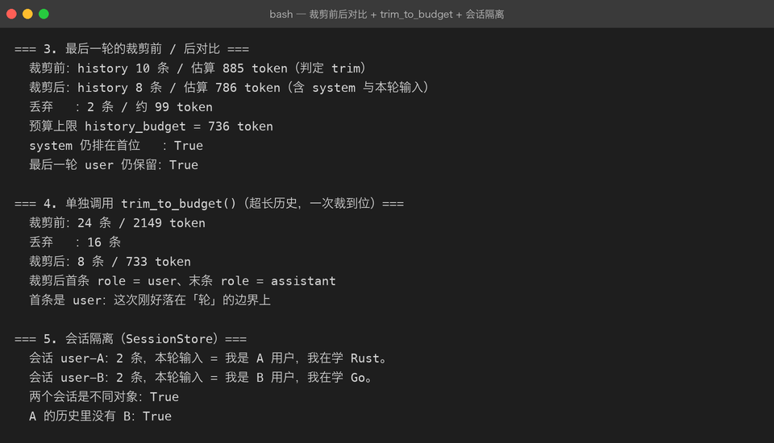

Project 03 — Chapter 05：Conversation Memory【对话记忆】
状态：✅ 已校对 对应代码：
src/assistant/memory.py、src/assistant/tokens.py
1. 项目要增加什么能力
Chapter 02 解决了「怎么把历史发出去」，这一章解决：
历史越来越长，怎么办？
现在的实现是全量累积：
self._turns.append({"role": "user", "content": content}) # 只增不减20 轮对话之后，每次请求都要带上 40 条消息。三个后果同时发生：
1. 变贵 —— token 数随轮数线性增长，成本随轮数平方增长
2. 变慢 —— 上下文越长，首字延迟越高
3. 会炸 —— 超过上下文窗口，API 直接报错本章目标：
在「记得住」和「装得下」之间做工程取舍：预算裁剪 + 摘要压缩。
2. 为什么需要这个知识
「记忆」是 AI 应用最容易被低估的复杂度。它不像写代码，错了会报错——记忆出错的表现是模型慢慢变笨：
第 5 轮： 回答精准
第 15 轮： 开始忘记开头说过的要求
第 25 轮： 把用户 A 的偏好答给用户 B（如果共享了会话）而且成本是隐性的：一个每天 1000 次调用的应用，如果每次都带 8000 token 的历史，一个月的光是历史部分就是一笔真金白银。
3. 核心概念
3.1 记忆的三个层次
| 层次 | 放什么 | 实现 | 对应章节 |
|---|---|---|---|
| 短期记忆 | 最近若干轮原文 | 滑动窗口 / token 预算裁剪 | 本章 |
| 中期记忆 | 较早内容的压缩摘要 | 让模型总结历史 | 本章 |
| 长期记忆 | 知识库、用户画像 | 向量检索（RAG） | Project 04 |
3.2 策略一：按 token 预算裁剪
def trim_to_budget(turns: list[dict], budget: int) -> list[dict]:
kept: list[dict] = []
used = 0
for msg in reversed(turns): # 从最近的往前留
cost = estimate_tokens(msg["content"])
if used + cost > budget:
break
kept.append(msg)
used += cost
return list(reversed(kept))三条铁律：
1. system 永远保留（它是人设和规则）
2. 最后一轮用户输入永远保留（这是当前问题）
3. 按「轮」剪切，不要切在工具调用的中间（见 Chapter 02 坑 5）

3.3 策略二：摘要压缩
裁剪是「丢掉」，摘要是「压缩」。做法：
历史超过阈值
↓
让模型把「第 1 ~ 第 N 轮」总结成一段话
↓
用这条 summary 替换掉那 N 轮原文
↓
之后的历史在 summary 基础上继续累积SUMMARY_PROMPT = (
"请把下面的对话压缩成一段不超过 {max_words} 字的摘要，"
"保留：用户的关键事实、已确认的结论、未完成的请求。\n\n{dialog}"
)摘要的代价是细节丢失。适合「用户说了自己是谁、想要什么」这类事实，不适合「用户让你改的那段代码原文」。
3.4 会话必须隔离
# ❌ 全局单例：所有用户共享一段历史
_conversation = Conversation()
# ✅ 按会话 ID 隔离
_sessions: dict[str, Conversation] = {}多用户共享一个会话对象，会出现「用户 A 问的问题出现在用户 B 的回答里」——这是数据泄漏级别的 bug。
FastAPI 侧按 session_id 建会话：
def get_conversation(session_id: str) -> Conversation:
if session_id not in _sessions:
_sessions[session_id] = Conversation(system_prompt=DEFAULT_SYSTEM)
return _sessions[session_id]生产环境要把 _sessions 换成 Redis（进程重启不丢、多副本共享）。
3.5 成本随轮数平方增长
这一点很多人没意识到：
第 n 轮请求携带的历史长度 ≈ n × 单轮长度
总消耗 ≈ 1 + 2 + 3 + ... + n = O(n²)30 轮对话的总 token 消耗，大约是单轮的 465 倍（30×31/2）。所以裁剪不是优化，是必需。
4. 项目代码
src/assistant/
├── memory.py # Conversation：add_* / to_messages() / trim_to_budget() / summarize()
├── tokens.py # estimate_tokens() / TokenBudget
└── service.py # 每次调用前按预算裁剪，超阈值时先摘要调用链：
add_user(本轮输入)
↓
if estimate(turns) > budget:
trim_to_budget() ← 先裁
↓
if estimate(turns) > hard_limit: ← 还超就摘要
summarize(oldest_half)
↓
to_messages() → client.chat()
↓
add_assistant(reply)5. Java ↔ Python 对比
| Java | Python | 说明 |
|---|---|---|
HttpSession | Conversation 对象 | 都是会话状态 |
@SessionAttributes | session_id → Conversation 字典 | 同 |
| Redis 存 session | Redis 存会话 JSON | 生产环境都走外部存储 |
LRU LinkedHashMap | trim_to_budget() | 同是「保留最近」 |
| 分页（丢掉旧页） | 滑动窗口 | 同 |
对象序列化 Serializable | to_messages() → JSON | 同 |
| Ehcache / Caffeine 淘汰策略 | token 预算裁剪 | 目标一致：有界内存 |
一个提醒：
Java 里 session 存多了是内存问题；AI 应用里历史存多了是钱的问题。 后者更容易被忽视，因为账单是月底才来的。
6. 常见坑
坑 1：裁剪时把 system 裁掉了
裁剪逻辑从后往前保留，很容易连开头的 system 一起丢掉，结果是「聊了几轮后人设没了」。
修法：system 不参与裁剪，单独保存、单独拼装（Chapter 02 已埋好这个设计）。
坑 2：切在工具调用中间
assistant(tool_calls) 被裁掉、但 tool 结果还在 → API 直接报协议错误。
修法：裁剪单位是一轮完整交互（user → [assistant → tool]* → assistant）。
坑 3：多用户共享会话
见 3.4。这是数据泄漏，优先级高于其他所有坑。
坑 4：摘要太频繁，反而更贵
每轮都做摘要 = 每轮多一次模型调用。合理阈值：
软阈值（比如 4000 token）：触发裁剪，免费
硬阈值（比如 12000 token）：触发摘要，付费但必要坑 5：用 len(字符串) 当 token 数
中文场景下 len() 和实际 token 差得很远（详见 Chapter 07）。用估算函数而不是字符数。
坑 6：进程重启后会话全丢
dict 在内存里，服务重启 = 所有人失忆。开发环境无所谓，生产环境必须外部化（Redis / 数据库）。
7. 实战挑战
挑战 1：实现 trim_to_budget()，保证 system 和最后一轮输入一定保留。
挑战 2：实现两级阈值——软阈值裁剪、硬阈值摘要，并在日志里记录触发了哪一级。
挑战 3（进阶）：实现多会话隔离（session_id → Conversation），并写一个测试：两个会话交替提问，验证历史不会串味。
8. 主动回忆
- 为什么对话成本是 O(n²) 而不是 O(n)？
- 裁剪的三条铁律是什么？
- 裁剪和摘要的区别与各自的适用场景？
- 什么时候该用摘要而不是直接丢掉？
- 多用户共享一个 Conversation 会造成什么级别的后果？
- 为什么裁剪要以「轮」为单位而不是「条」？
9. 本节完成标准
- [ ]
Conversation有 token 预算裁剪，system 与最后一轮输入必留 - [ ] 有软/硬两级阈值，硬阈值触发摘要压缩
- [ ] 多会话隔离：并发交替提问不会串味（有测试覆盖）
- [ ] 每次调用能在日志里看到历史的 token 数与是否触发裁剪
- [ ] 连续 20 轮对话不会报上下文超长错误
上一章：04-streaming.md 下一章：06-model-parameters.md —— 给模型调参。